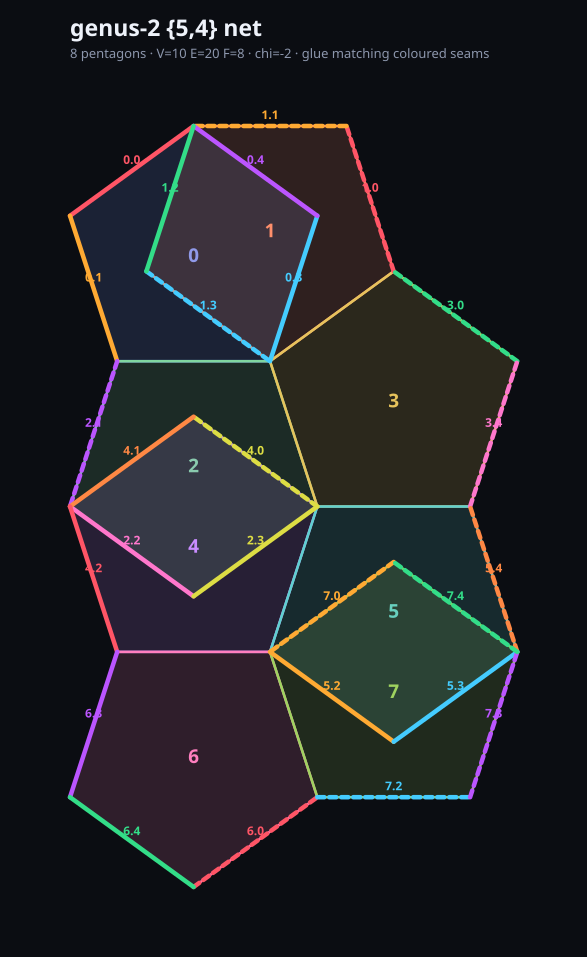

genus-2 {5,4} — compact net
8 pentagons · V=10 E=20 F=8 · chi=-2 · no boundary

the same eight-pentagon net as before, but packed instead of snaked out in a line. the spanning tree isn't picked by walk order any more: it's chosen by searching over trees and keeping the one whose flat layout has the smallest bounding box. eight pentagons, twenty edges, seven used by the tree, thirteen left as seams — the coloured pairs you'd glue to close it into the two-holed surface.
every face has five neighbours, four pentagons meet at every vertex, no edge left open. this
is the smallest honest closed {5,4} world, and the map the glider hunt ran on: every
mover came back a symmetry rotor or a breather, never a traveller.